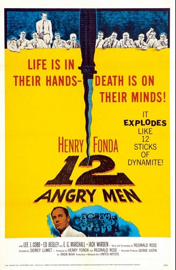

Henry Fonda
12 įtūžusių vyriškių (angl. 12 Angry Men) – 1957 metais sukurtas filmas, pasakojantis apie prisiekusiųjų diskusiją priimant verdiktą dėl įvykdyto nusikaltimo. Beveik visas juostos veiksmas vyksta nenutrūkstamai prisiekusiųjų pasitarimo kambaryje. Juosta sukurta pagal to paties pavadinimo televizijos novelę.
1997 metais buvo sukurta nauja šio filmo versija. 2007 m. JAV Kongreso biblioteka filmą įtraukė į Nacionalinį filmų registrą.
Pasibaigus teismui, dvylika prisiekusiųjų susirenka specialiame kambaryje, kad priimtų nuosprendį byloje, kur jaunuolis kaltinamas nužudęs tėvą. Įkalčiai ir liudininkų parodymai atrodo svarūs ir pirminiu balsavimu 11 prisiekusiųjų nusprendžia, kad jaunuolis kaltas, tuo abejoja tik prisiekusysis Nr. 8. Kadangi nuosprendžiui priimti reikia vienbalsio sprendimo, tarp prisiekusiųjų prasideda ginčai. Mėgindami atkurti liudininkų parodymus, jie atranda vis daugiau smulkmenų ir pradeda abejoti savo pačių pasirinkimu.
